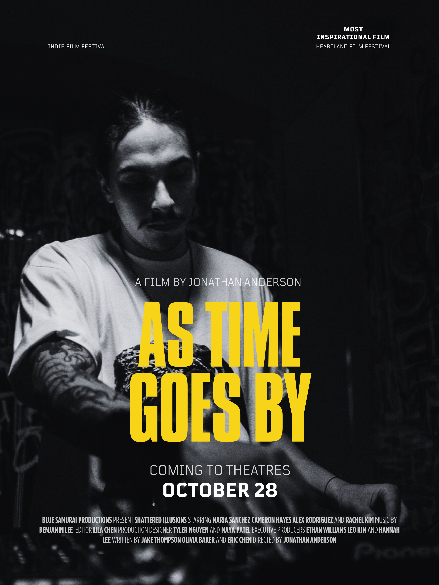

As Time Goes By
A love story told across decades in Chicago, where music, memory, and sacrifice collide.
Shared Project Slate
A social-style view of projects in the CineSparq ecosystem. Creators and industry partners can see what’s in motion without exposing scores or sensitive materials.
In the live platform, full details and documents are only visible after access is granted and agreements are accepted.
Scroll the slate, click a title to explore, and move from curiosity to conversation.
A love story told across decades in Chicago, where music, memory, and sacrifice collide.

After a major setback, a successful retiree trades love for ambition until life teaches him how to open his heart again.

A coming-of-age vertical thriller where one secret pulls a tight-knit crew into deeper danger with every episode.
Three siblings fight to keep their late father’s bar alive as development pressures close in on their block.
A DJ-turned-pastor must confront his past when an old club track explodes on social again.
A burned-out PA turns a chaotic one-day music video shoot into a life-changing shot at producing.
A pirate radio host starts receiving calls from a future that might still be changed.
An estranged mother and daughter road-trip across the country with one last box of family tapes.
A retired dock worker uncovers a decades-old cover-up when a ship returns to port without a crew.
A young organizer must choose between her safety and her city when a protest spirals out of control.